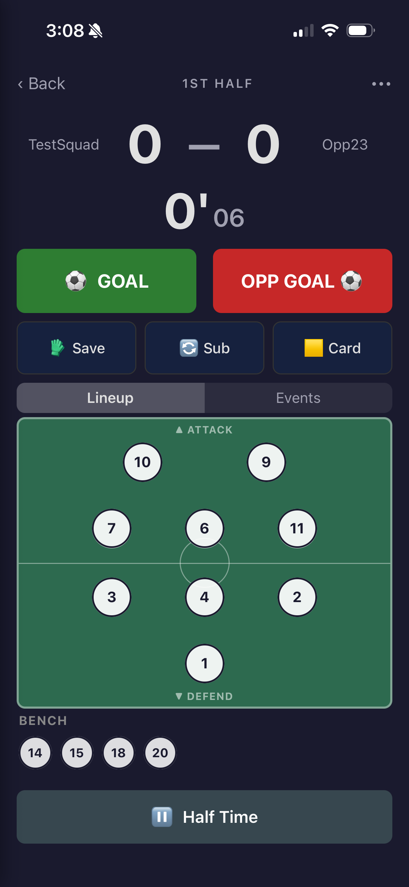
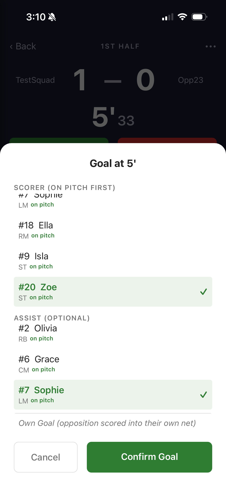
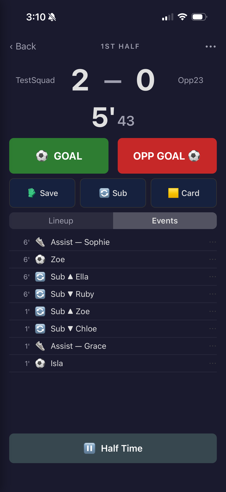

Live match
Start
On the match, tap ▶ Start Live Match. The clock starts straight away and the live screen opens. Keep the app open on the sideline; the screen stays awake.

Free accounts can record 5 live matches; with a subscription or club seat, unlimited. The count shows under the button.
Record what happens
- ⚽ GOAL: pick the scorer (players on the pitch first) and, if you like, who assisted. For an own goal by the other team, choose "Own Goal". Tap Confirm Goal; the score goes up.
- OPP GOAL ⚽: the other team scored; tap Yes.
- 🔄 Sub: tick who's coming off and who's going on, check the position each new player takes, and tap Confirm Sub.
- 🧤 Save: a save by your keeper (or another player).
- 🟨 Card: yellow or red, and who. A red card takes the player off.

On the pitch view (the Lineup tab): tap a player, then another player on the pitch to swap their positions, or a bench player to sub them on.
Planned subs: if you made a rotation plan, changes pop up when they're due ("⏱ planned subs due"). Tap Record for each, or ✕ to skip.
Mistakes: on the Events tab, tap an event to change its minute or delete it (deleting a goal takes it off the score).

Half time and full time
- Tap ⏸ Half Time at the break. The squad is told the half-time score.
- Tap ▶ Start 2nd Half when play restarts. The clock carries on from the end of the first half.
- At the end, tap ■ End Match, then Full Time (or Extra Time if the game goes on).
The final score is saved, the match is marked complete and the squad gets the result. You're back on the match screen, ready for After the game.
Good to know
- No signal? Everything you record is saved on your phone first and sent when you're back online ("⚠ N events queued, syncing").
- ‹ Back leaves the live screen while the clock keeps running; open the match and tap ▶ Manage Live Match to return.
- The ⋯ menu: Edit Half Length, Advance Clock 1 Minute (if you started late), and Hand Off Recording to pass the recording to another coach.
- If the recording coach's phone drops out, another coach can take over from the match (▶ Resume Live Match).
What parents see
Approved parents and supporters tap 👁 Watch Live on the match to follow the score, clock, line-up and events as they happen, on a phone or a computer. Goals and the result also arrive as notifications.